After you log into the OroCommerce, you can always find a link to your user page in the drop-down menu that resides below your username in the top right corner. This is a fast way to access your user profile, calendar, mailbox, and task list.
The following subsection is devoted to the user page that is available with My User menu. You can find more information about other menu items in the User Menu section.
This page provides you the full details of your user profile.
Its General section contains the basic profile details.
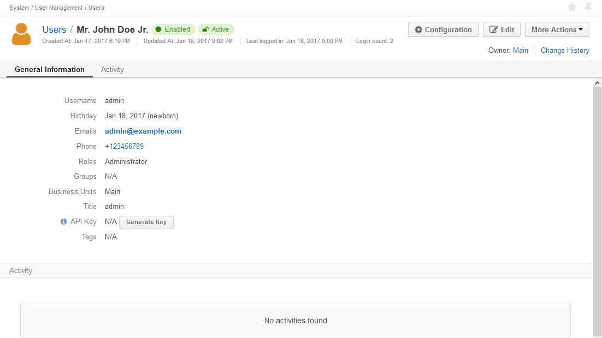The set of information available in the section depends on the permissions defined for your user. The information may include:
If there is an email saved or/and a call logged in OroCommerce related to you, they will be displayed in the Activities section.
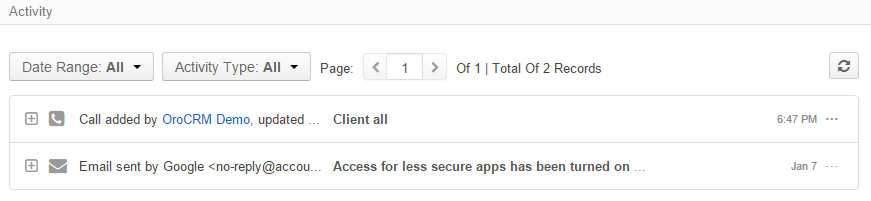If there is a task assigned to you, they will be displayed in corresponding grids of the Additional section.
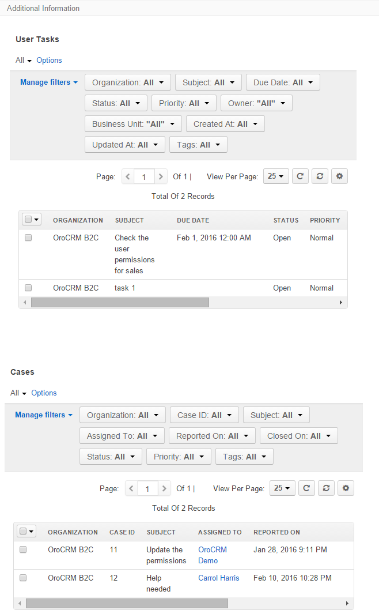Action buttons are available in the top left corner of My User page. The set of buttons depends on your organization settings and user permissions. These are the same actions that you can perform in the system with regard to other users. Most of the actions is described in the Productivity Tools section.
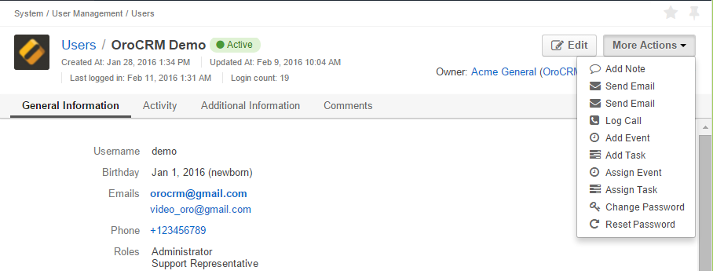If you a permitted, you can add and edit tags for your user. The tags can be used for the search, reporting, segmentation and filtering.
Hover the mouse over the Tags field in the General section of the My User page as shown below.
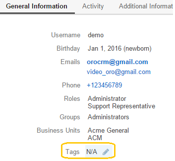
Click the icon, and the tag field will appear.
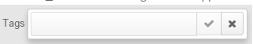
Start entering a tag and if an existing tag is found, it will be displayed for selection. If not, a new tag will be created.
If you have entered a new tag, it will appear in the selector with a (New tag) label. Select this to add to your user as well as the list of available tags for future use. This way you can add one or more tags that contain one or several words.
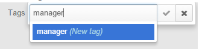
Should an integration with a third-party software require an API Key, it can be generated on the My User page:
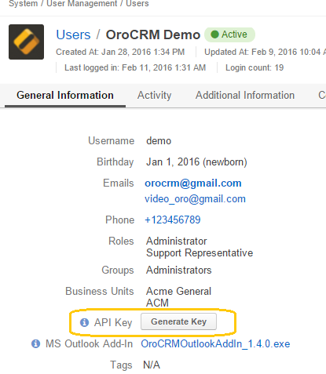Caution
Only one API key may exist for the user at the same time. If you choose to generate another API key over the existing one, the old key is discarded and cannot be used to access OroCommerce.
Click the Edit button in the top left corner of the page to change and add the profile details, as described in the section below.
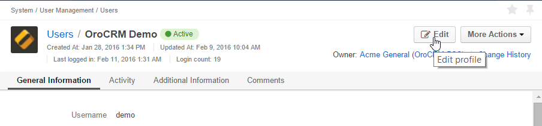Once you have clicked the Edit, the Edit form of your user profile will be displayed. Here you can update your credentials, change your password, and synchronize OroCommerce with an existing IMAP mailbox.
At the top of the General section, you can view, define and change the basic details such as:
Username: An alias used for login and identification. It should be at least three characters long and cannot start with a space.
Names: Your personal name. It can be comprised of the first, middle, and last name, a prefix and a suffix. The first and the last name are mandatory. You can use any number of characters of any alphabet in the name.
Birthday: Select the date in the calendar.
Avatar: A picture associated with you in the system. To set an avatar, click the Choose file button and select your avatar file from your computer. Avoid using large files; 100×100 pixels is recommended. After you have saved the user settings the file will be checked for consistency with your organization’s rules. Please contact your OroCommerce administrator for details. The image will be displayed along with your name in the selectors and will help other users to recognize you quickly.
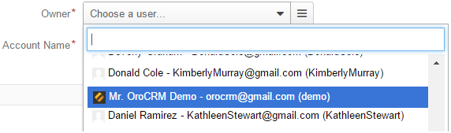
Any custom details permitted for editing will be available in the Additional section. In the example above, this is the Title field.
Note
Although the Status fields is displayed on the Edit user page, you cannot change it, as it is impossible to deactivate a profile that you are using.
You can define and update the contact information in the General section.
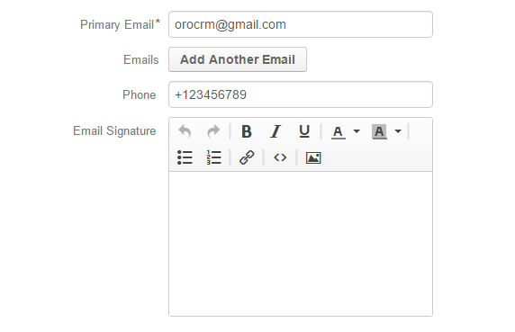Your email addresses: You are required to provide a primary email address. This email address must be unique for each user in the system. You can also add additional email addresses via Add Another Email button.
These addresses are used when an email is created within OroCommerce:
The primary email address is used as a default value and additional addresses are available in the selector for the from field.
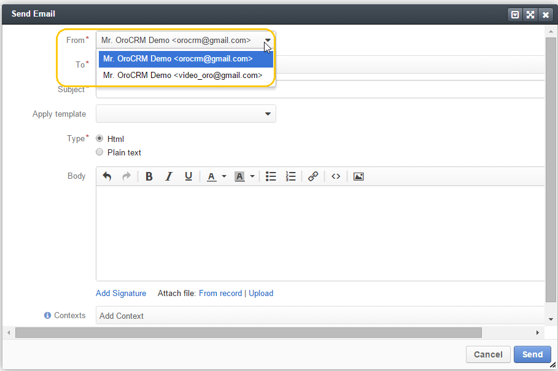
Note
If synchronization with an external SMTP server has been enabled for an external mailbox (as described in the Synchronize Your Mailbox with OroCommerce section below, your addressee will always see the address of the synchronized mailbox as the from field value.
You will see the letters sent by other OroCommerce users to your primary and additional email addresses in the “Activities” section on your User page.
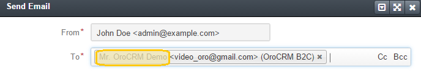
Phone number: is displayed to other users among your contact details.
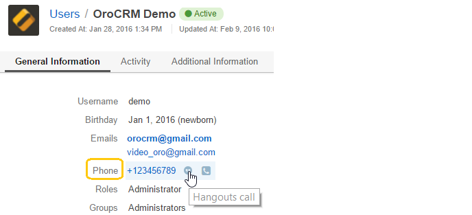
Email signature: The signature may be added to any email you write in OroCommerce. Your organization settings define whether the signature will be added automatically or manually.
To change your password, go to the Password section of the Edit page.
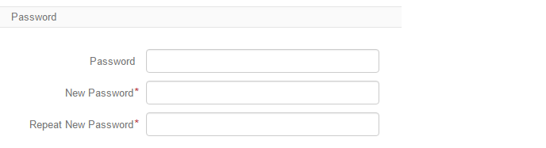You have to:
Note
If you are not using your Google account, nor your corporate-wide credentials, it is strongly recommended to change your password after the first log-in.
Emails can be sent from user to user within OroCommerce and outside OroCommerce using internal OroCommerce SMTP server. However, most OroCommerce users already have some external mailbox used for work-related purposes. You can synchronize this mailbox with your mailbox in OroCommerce in the Email synchronization settings section.
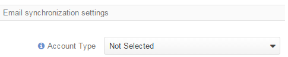To synchronize your existing mailbox with your mailbox in OroCommerce, go the the Email synchronization settings section.
OroCommerce can be synchronized with any IMAP/SMTP servers. A dedicated Gmail synchronization is available to simplify synchronization with Gmail-based accounts.
If synchronization with an IMAP server has been defined, all the emails from synchronized folders of the external mailbox will be available to you in My Emails in OroCommerce. If synchronization with an SMTP server has been defined, all the emails sent from OroCommerce will be available in the external mailbox.
Please note, that if SMTP synchronization has been enabled, your addressee will always see the mailbox address as the from field value.
Note
If no synchronization has been enabled, emails received from other OroCommerce users will appear in the Activity section of the My User page but not in My Emails. Emails from a synchronized mailbox can be reached from the both.
The functionality can be used to synchronize any IMAP/SMTP server with your mailbox in OroCommerce.
Select the Account Type - Other (if available). If this is an only option enabled for the system, the selector won’t be displayed - skip the step.
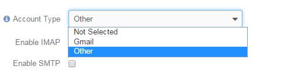
Hint
If you choose not to enable SMTP synchronization, you will still be able to send emails from OroCommerce, but they won’t be synced with the email server and you will not see them in other email clients (such as Outlook or Gmail web interface). We strongly recommend to enable SMTP at all times.
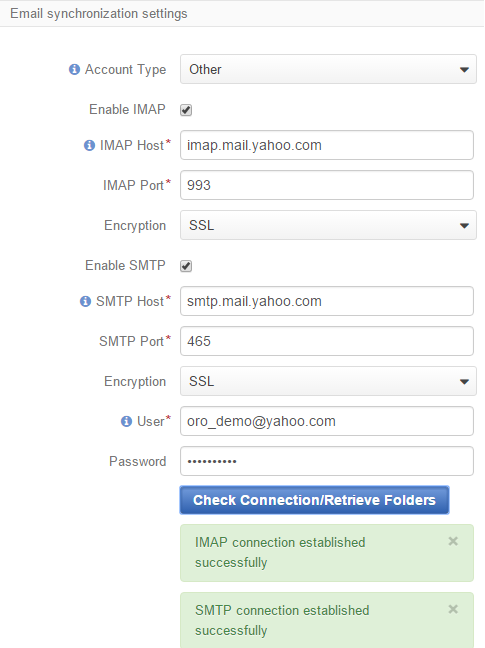
You may use the generic IMAP/SMTP synchronization described above for your Gmail account, however,you must allow access for less secure apps in your Gmail settings first. (Please see detailed instructions here.)
To avoid this step and improve security we strongly recommend to use the dedicated functionality described below. This section applies to both @gmail.com customers and Google Apps customers.(Check with your email administrator if you doubt).
Select the Account Type - Gmail and click the Connect button that appears below.
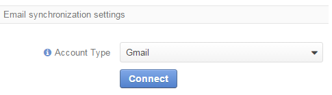
Note
This option is only available if your OroCommerce instance is connected with a Google Apps account. Please check with your system administrator if you want to enable Gmail synchronization for your account.
If you haven’t used a Google account in your browser (or if its cache has been cleared), the Sign-in form will appear. Use it to log in to your account.
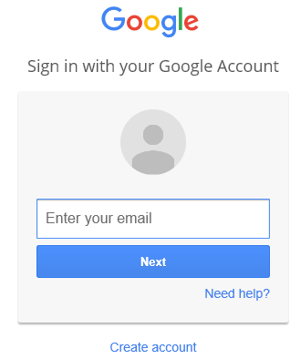
If you are using several Gmail accounts in your browser, you will see a list of them. Select the account for which you want to enable synchronization with OroCommerce, then log in (if necessary).
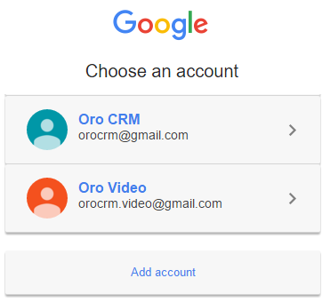
As soon as you are logged into a single Gmail account, you need to let OroCommerce view and manage your mail, and give it offline access to your mailbox.
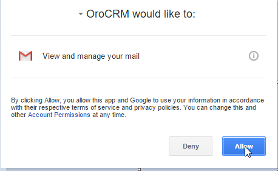
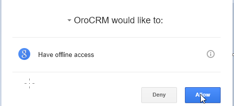
Hint
Make sure that pop-up windows from your OroCommerce instance are not blocked.
After the connection has been established, you will see the connected account name (your email address) and the list of folders that can be refreshed with the Retrieve Folders button.
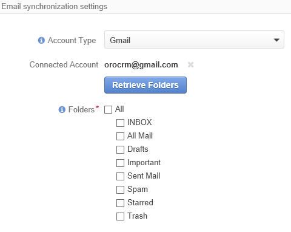
Select the folders you want to synchronize and save your user profile. The synchronization will start immediately, but the full sync can take a while depending on the size of your mailbox.
If you want to change the mailbox you sync with OroCommerce, simply change the IMAP/SMTP credentials for generic IMAP sync, or remove the connected Gmail account, change your primary email address, and sync with Gmail again.
Caution
If you change the synced mailbox, all emails from the previous mailbox will be deleted from OroCommerce.
If you want to work with email in multiple organizations, you have to configure a mailbox for every organization. You can synchronize different external mailboxes or the same external mailbox for your user in different organizations.
Click the Save and Close button in the top right corner to save the changes to your profile and return to the My User page.